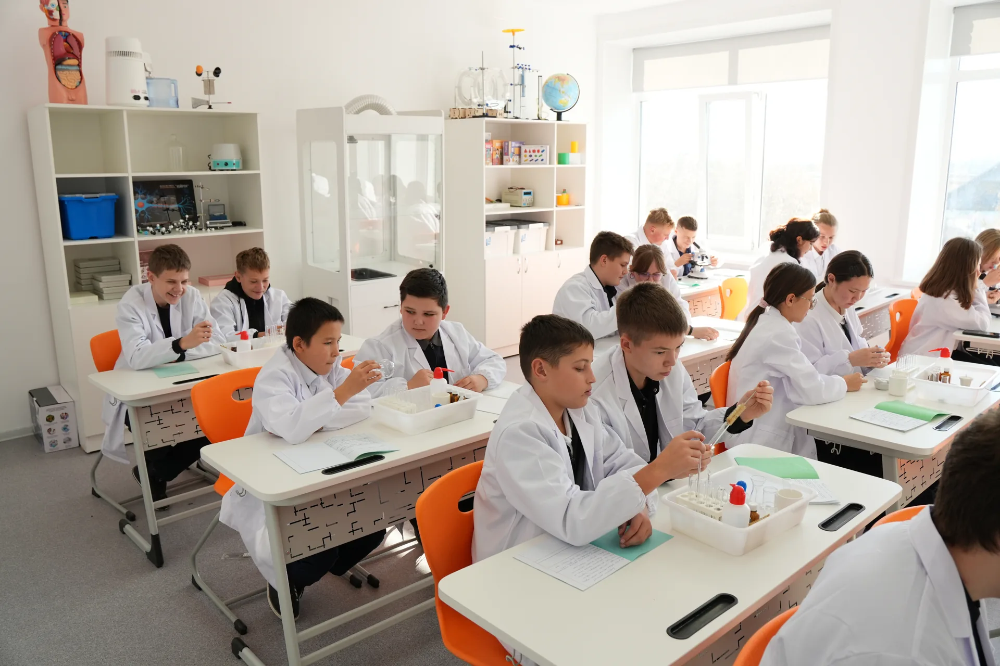
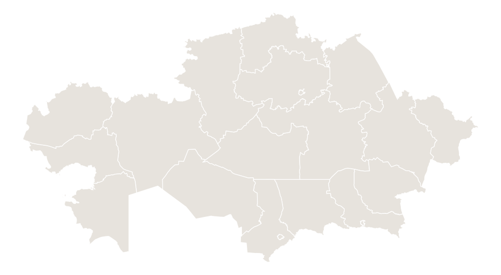

«Баланың бәрі бірдей. Ауыл баласы мен қала баласының
білім алу мүмкіндігі де бірдей болуы керек.»
Auyl Bilim — «Қазақстан халқына», «Білім-Инновация» және «Jelken foundation» қорларының ауыл балаларына сапалы білім алуға тең мүмкіндік жасап, ауыл мен қала арасындағы білім сапасы алшақтығын азайтуға бағытталған бірлескен қайырымдылық жобасы.Auyl Bilim — совместный благотворительный проект фондов «Қазақстан халқына», «Білім-Инновация» и «Jelken foundation», направленный на поддержку и развитие сельских школ.
Жобамен қамтылған өңірлерРегионы, охваченные проектом
12
өңіррегионов
849
мектепшкол
2 117
жабдықталған сыныпоснащённых классов
25 401
оқытылған ұстазобученных педагогов
8.8%
оқушылардың білім сапасының орташа өсімісредний рост качества знаний учащихся
Толығырақ көру үшін өңірді таңдаңызВыберите регион, чтобы узнать больше

ДЕЙІНДО
КЕЙІНПОСЛЕ